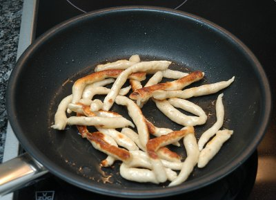

| Zutaten für 4 Personen: | |
| 500 g | "Gschwellti" |
| 1 | Ei |
| Salz | |
| Muskatnuss | |
| 80-100g [eher 300g] | Mehl |
| Butter | |
Kartoffeln 10 Minuten im Dampfkochtopf beim 2. Ring zu Gschwellti machen.
Nach dem auskühlen die Kartoffeln schälen und durchs Passevite treiben.
Mit Ei, Salz, Muskat und so viel Mehl wie nötig verkneten, dass ein ziemlich fester Teig entsteht.
Kleinfingerdicke, ca. 8-10 cm lange Röllchen ('Nudeln') formen, portionenweise in siedendes Wasser geben und ziehen lassen, bis sie obenauf schwimmen.
Gut abtropfen und abkühlen lassen.
Dann in heisser eingesottener Butter rundum goldbraun braten.
Rezept auf einem Sack Kartoffeln.
Gibt enorm Aufwand der sich kaum lohnt. Habe mich durch das Rezept durchgequält. Die 80-100g Mehl stimmen nie und nimmer. Ich habe eher 300g zugeschüttet ehe das wie ein Tag auszuschauen begann. Das Formen ist mühsam. Beim Braten werden sie etwas krustig. Vielleicht ein ganz interessantes Experiment aber doch eher etwas fürs Restaurant oder die Fertigpackung. RE 17.10.2009